Melanesia embodies ancestral agency in masks, spirit houses, and grade figures. From the sacred artery of the Sepik River to the war canoes of the Solomon Sea, the slit gongs of Ambrym, and the kava ceremonies of Fiji, the object is never a symbol but an activated presence — a hierophany danced, sounded, and sailed.Melanezia întruchipează forța ancestrală în măști, case ale spiritelor și figuri de grad. De la artera sacră a fluviului Sepik la canoele de război ale Mării Solomon, gongurile-fantă din Ambrym și ceremoniile kava din Fiji, obiectul nu este niciodată un simbol, ci o prezență activată — o hierofanie dansată, sunată și navigată.
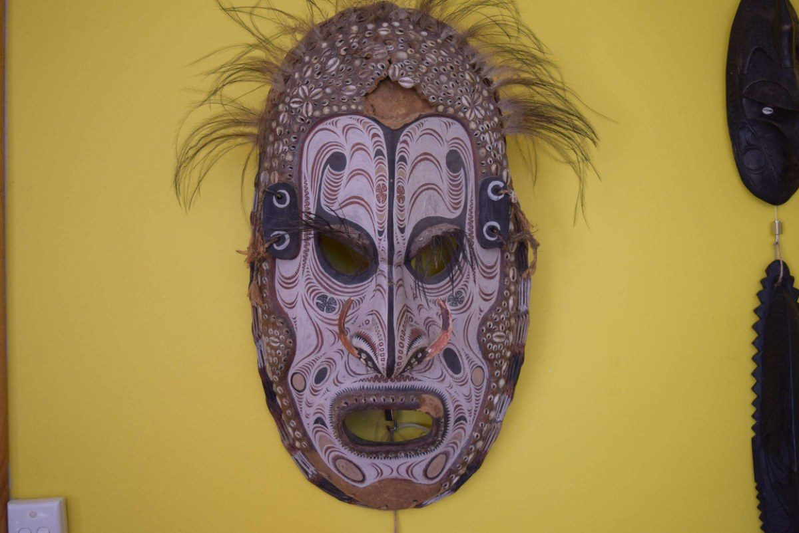
Mwai Mask
Angoram Village, Lower Sepik, PNG · Wood, pigment, fibre
A micro-theology of the haus tambaran (spirit house), the Mwai mask from Angoram embodies the ancestral forces of the Sepik.O micro-teologie a haus tambaran-ului (casa spiritelor), masca Mwai din Angoram întrupează forțele ancestrale ale Sepikului.
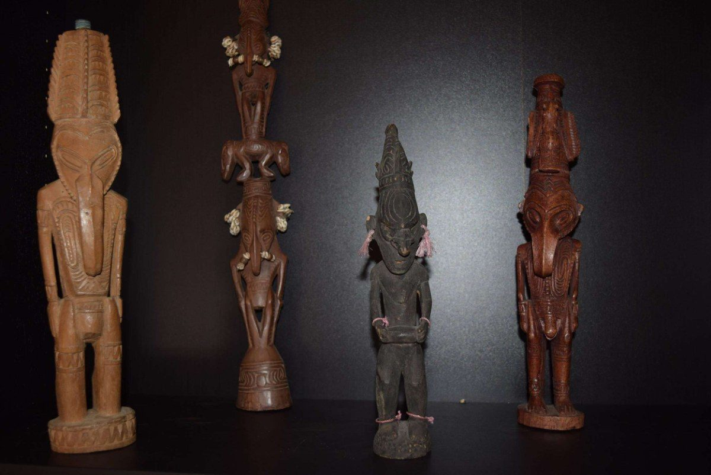
Ancestor Spirit Figures
Angoram, Sepik region, PNG · Carved wood
Standing guardians of lineage, carved to hold the presence of the ancestral dead.Gardieni în picioare ai descendenței, sculptați pentru a ține prezența morților ancestrali.
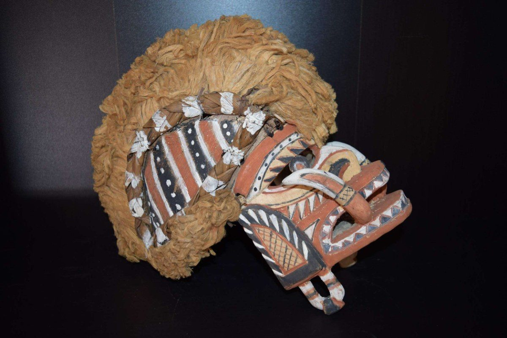
Tatanua Malangan Funerary Mask
New Ireland, PNG · Wood, fibre, pigment
Materialising ancestors during the complex Malangan mortuary cycle, allowing the living to release the dead.Materializând strămoșii în cursul complexului ciclu funerar Malangan, îngăduind celor vii să-i elibereze pe cei morți.
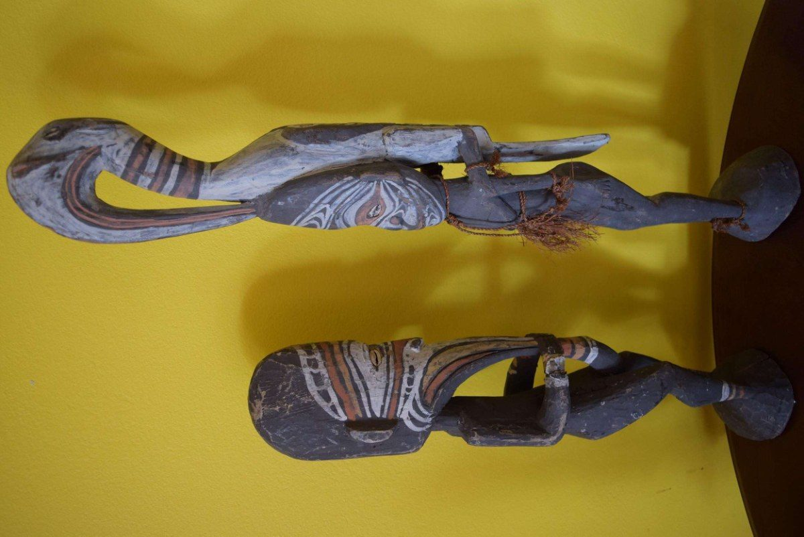
Male and Female Bird Ancestor Statues
Palambei, Sepik, PNG · Carved wood
Paired ancestral figures surmounted by birds — mediators between the human world and the sky.Figuri ancestrale perechi, încununate de păsări — mediatori între lumea umană și cer.
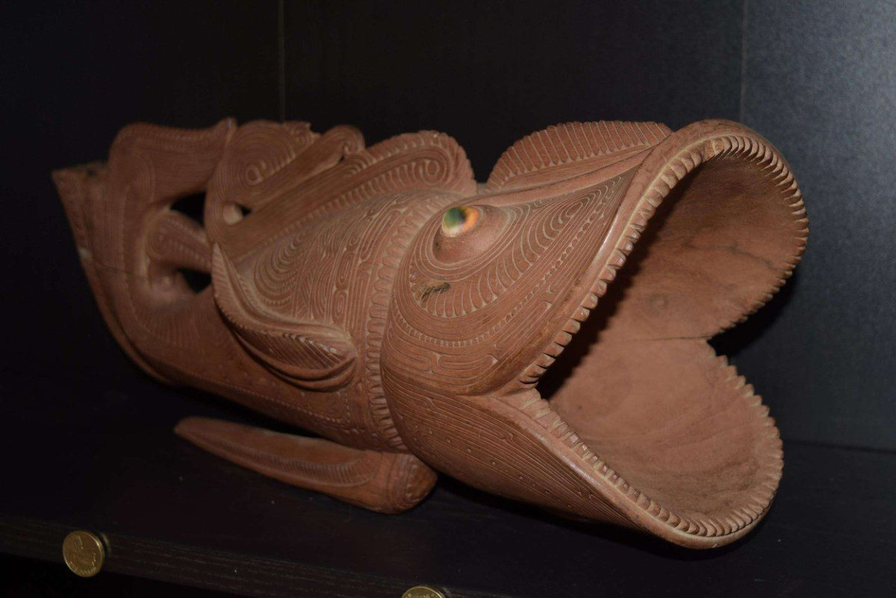
Carved Whale Shark
Papua New Guinea · Carved and pigmented wood
The whale shark rendered as a being of the cosmic sea, a presence of the deep.Rechinul-balenă redat ca ființă a mării cosmice, o prezență a adâncului.
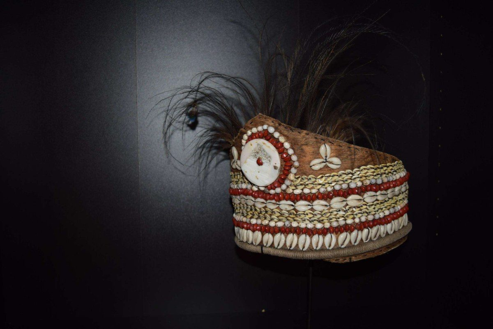
Irian Crown (Asmat Ceremonial Feather Tiara)
Asmat, PNG · Feather, fibre, shell
Ceremonial feather regalia signalling status and the terrifying beauty of ritual presence.Însemne ceremoniale din pene, semnalând statutul și frumusețea înspăimântătoare a prezenței rituale.

Nguzunguzu (Canoe Prow Figurehead)
Solomon Islands · Wood, mother-of-pearl, pigment
Mounted at the waterline of a war canoe, its prognathic face and shell-inlaid eyes intercept hostile sea spirits (kesoko) and ensure safe passage.Montat la linia de plutire a unei canoe de război, chipul său prognat și ochii încrustați cu scoică interceptează spiritele ostile ale mării (kesoko) și asigură trecerea în siguranță.
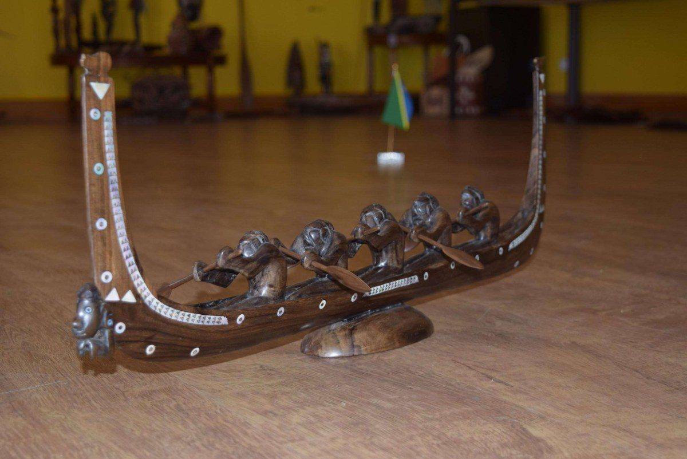
Tomoko (Model War Canoe)
Solomon Islands · Wood, fibre, shell inlay
The war canoe as a mobile sacred centre, carrying a community’s mana across the chaotic expanse of the profane sea.Canoea de război ca centru sacru mobil, purtând mana unei comunități peste întinderea haotică a mării profane.
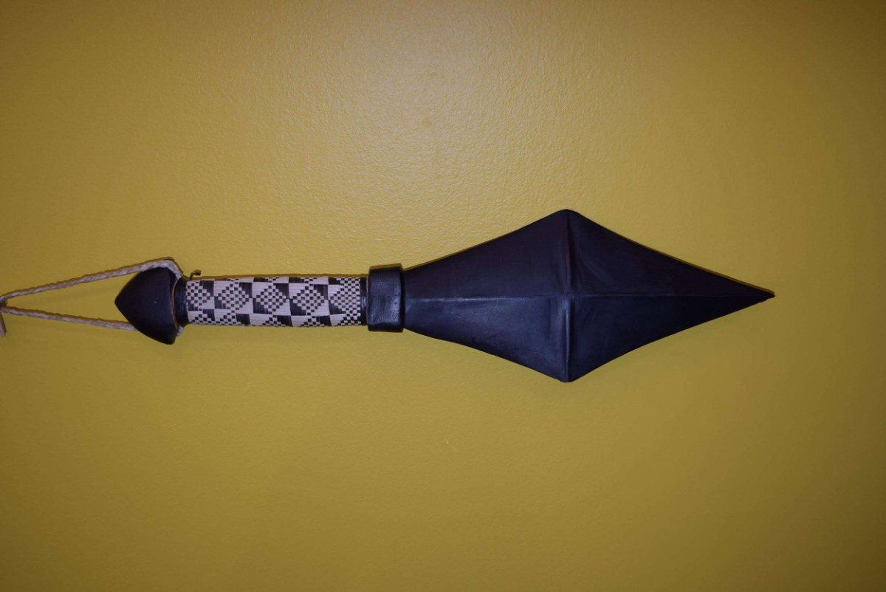
Diamond War Club
Solomon Islands · Hardwood, woven plant fibre
A weapon of lethal geometry, its woven handle binding force to craft.O armă de geometrie letală, al cărei mâner împletit leagă forța de meșteșug.
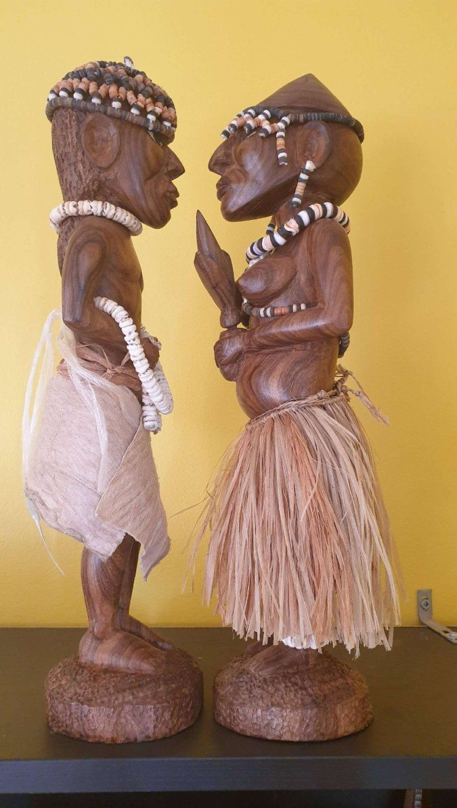
Bride’s Wedding Attire
Solomon Islands · Shell money, woven textile
Shell money (bata) as materialised social relation; the bridal regalia binds families and ancestors in reciprocal obligation.Banii-scoică (bata) ca relație socială materializată; ținuta mireasei leagă familiile și strămoșii într-o obligație reciprocă.
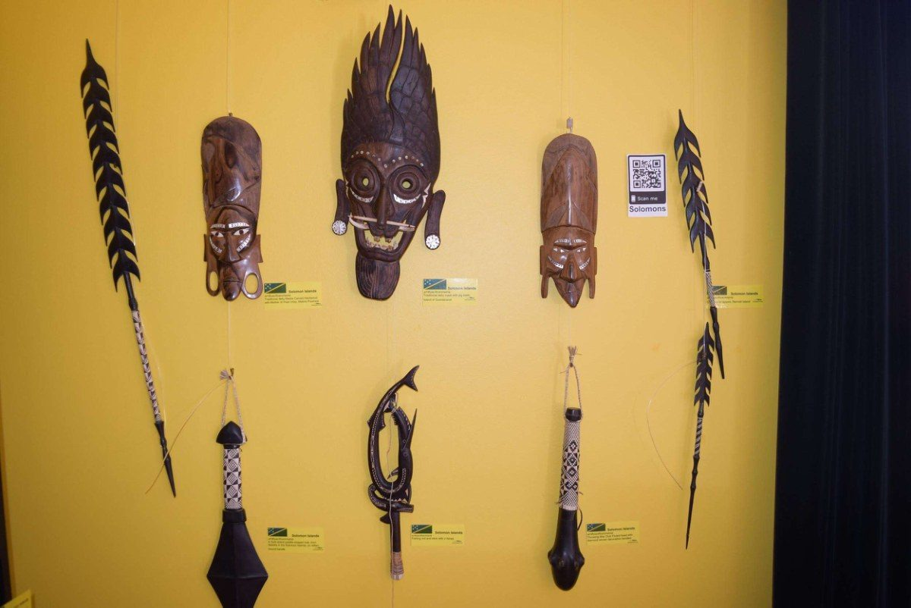
Deity Masks with Mother-of-Pearl Inlay
Makira Province, Solomon Islands · Hardwood, shell
Physical conduits for deities; when danced, the mask becomes a true hierophany.Conducte fizice pentru divinități; când este dansată, masca devine o adevărată hierofanie.
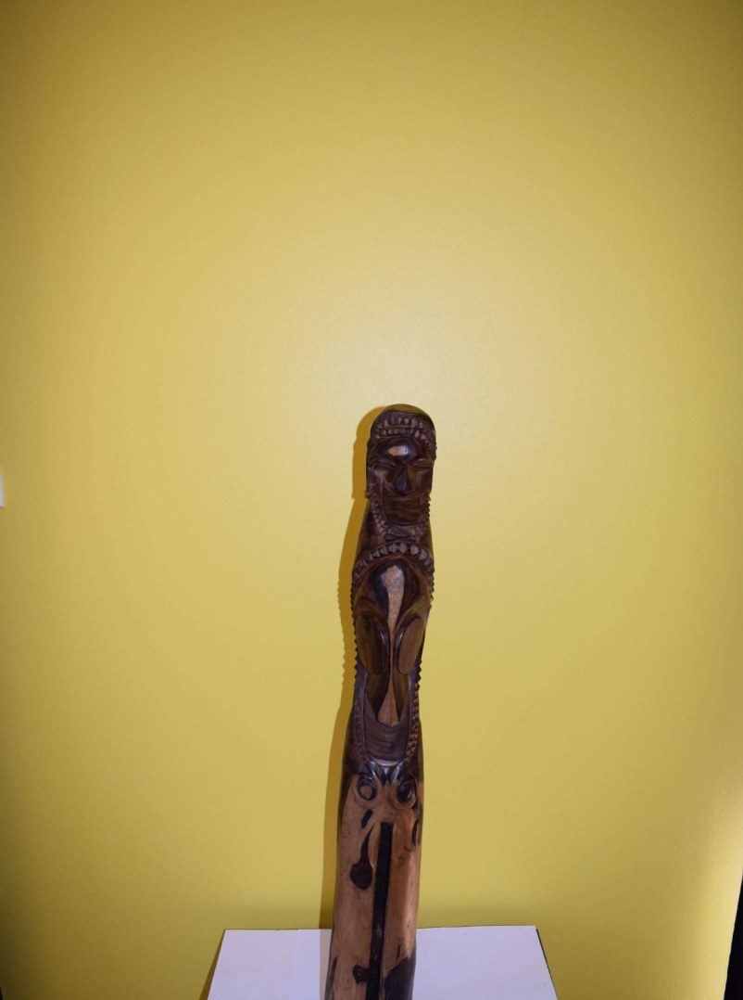
Atingting (Slit Gong Drum)
Ambrym Island, Vanuatu · Carved breadfruit wood
Carved from a whole tree and associated with Chief Tofor, the slit gong is the physical voice of the ancestors, sounding to villages and underworld alike.Cioplit dintr-un arbore întreg și asociat căpeteniei Tofor, gongul-fantă este vocea fizică a strămoșilor, răsunând deopotrivă către sate și către lumea de jos.
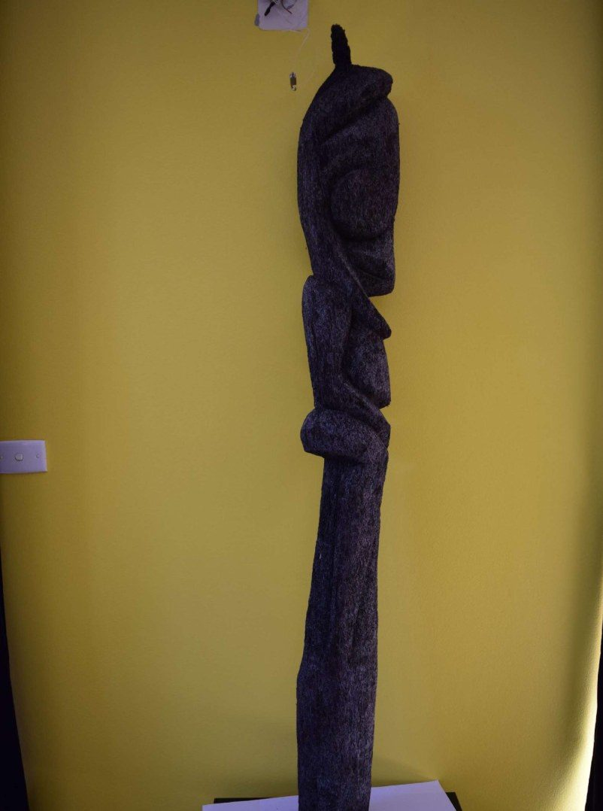
Grade Ritual Figure (Maghe ne Naun)
Ambrym Island, Vanuatu · Carved tree-fern wood
Commissioned as a man ascends the Suque graded society, the figure physically anchors his new spiritual authority.Comandată pe măsură ce un bărbat urcă în societatea ierarhizată Suque, figura ancorează fizic noua sa autoritate spirituală.
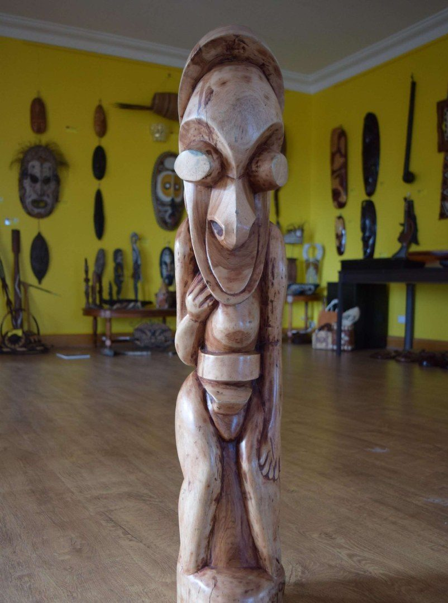
Grade Figure (Chief)
Vanuatu · Wood, pigment
A chiefly grade figure marking rank earned through feast-giving and the sacrifice of tusked pigs.O figură de grad princiară, marcând rangul dobândit prin oferirea de ospețe și sacrificarea porcilor cu colți.
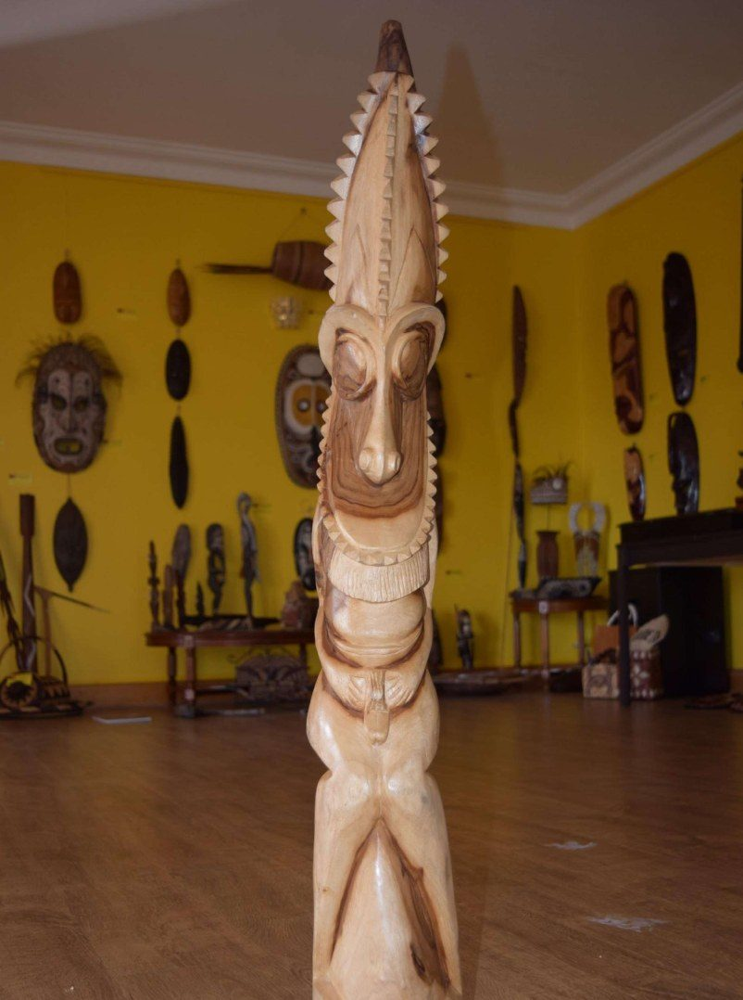
Head of a Grade Figure with Rom Mask
Vanuatu · Wood, pigment, fibre
Grade-society authority fused with the features of the Rom dancing mask.Autoritatea societății de grad contopită cu trăsăturile măștii de dans Rom.
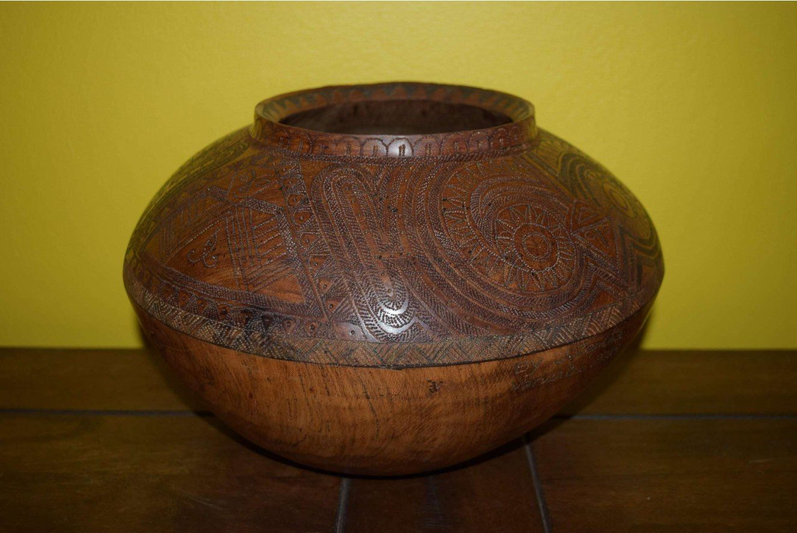
Wooden Lapita-Design Bowl
Vanuatu · Carved wood
Incised with designs descending from the ancient Lapita ceramic tradition, ancestor of Oceanic art.Incizat cu motive coborâtoare din străvechea tradiție ceramică Lapita, strămoașa artei oceanice.
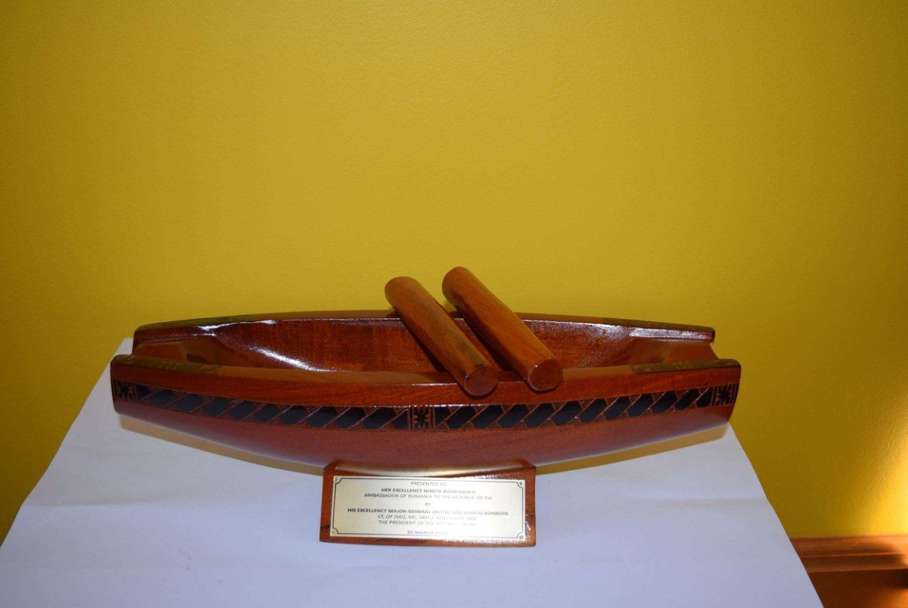
Woven Fibre Bag & Musical Instrument
Vanuatu · Plant fibre, wood
Everyday and ceremonial craft from Port Vila, the woven bag carrying both goods and identity.Meșteșug cotidian și ceremonial din Port Vila, sacul împletit purtând deopotrivă bunuri și identitate.
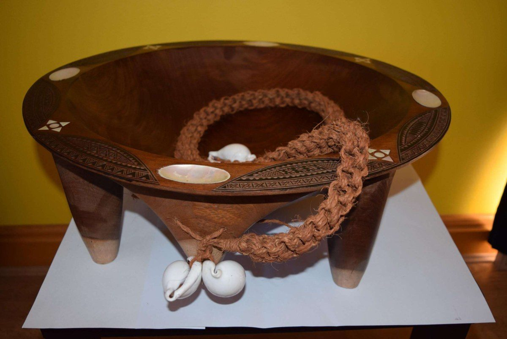
Ceremonial Tanoa (Kava Bowl)
Lau Islands, Fiji · Carved hardwood
A microcosm of Fijian society: when yaqona is mixed and served by protocol, the tanoa binds chiefs, commoners, and the land (vanua) in a sacred covenant.Un microcosmos al societății fijiene: când yaqona este preparată și servită după protocol, tanoa leagă căpeteniile, oamenii de rând și pământul (vanua) într-un legământ sacru.
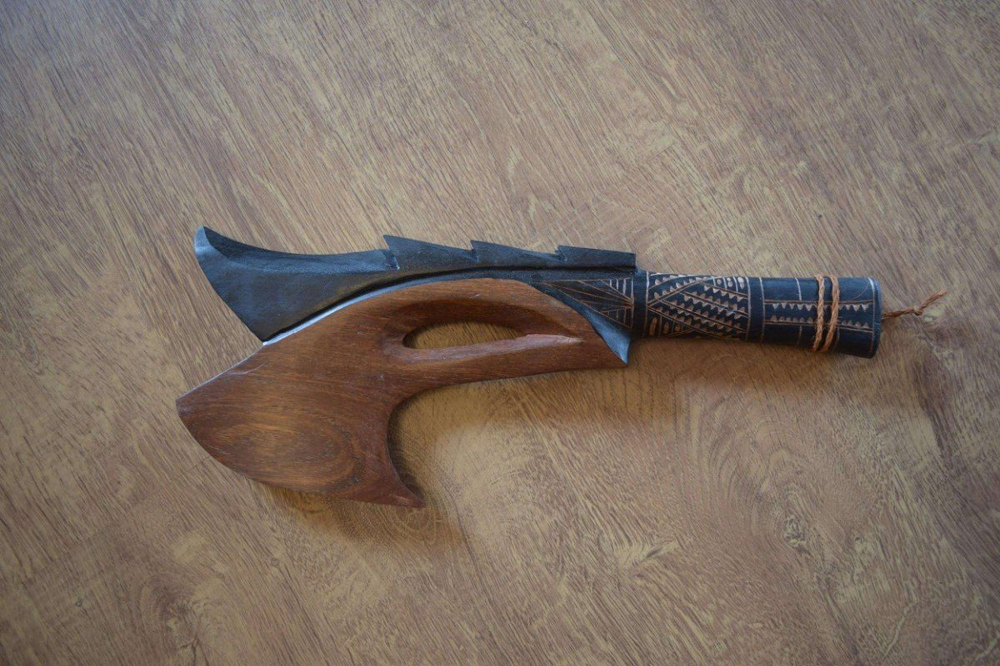
Neck-Breaker War Club (Totokia)
Fiji · Hardwood, sennit
A masterpiece of lethal efficiency and geometric beauty; the club is a vessel for the warrior’s and his ancestors’ mana.O capodoperă de eficiență letală și frumusețe geometrică; ghioaga este un vas pentru mana războinicului și a strămoșilor săi.
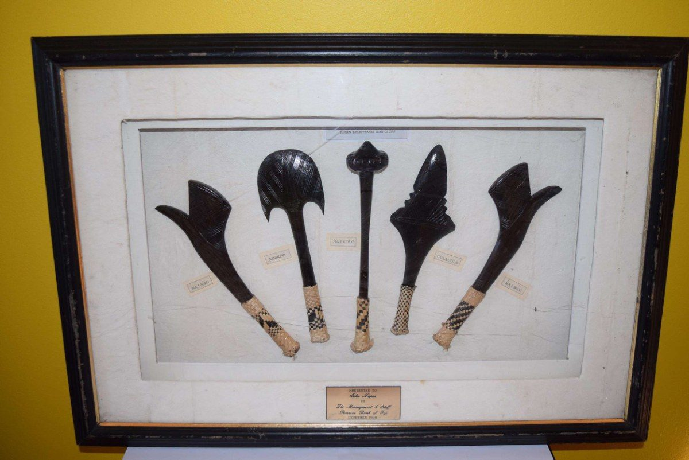
War Clubs (Na I Wau and others)
Fiji · Hardwood, sennit binding
An assembly of Fijian clubs — each form a distinct instrument of martial and spiritual power.Un ansamblu de ghioage fijiene — fiecare formă, un instrument distinct de putere marțială și spirituală.
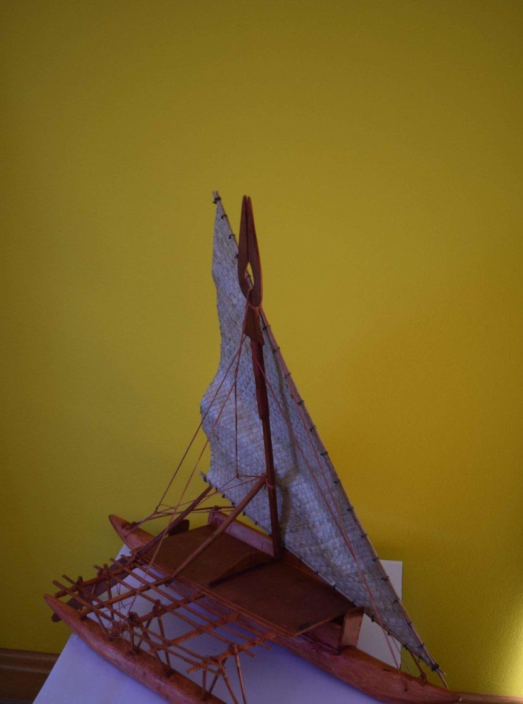
Drua (Model Double-Hulled Canoe)
Fiji · Wood, fibre, fabric
The great double-hulled voyaging canoe, apex of Pacific maritime engineering.Marea canoe de călătorie cu dublă cocă, culmea ingineriei maritime din Pacific.
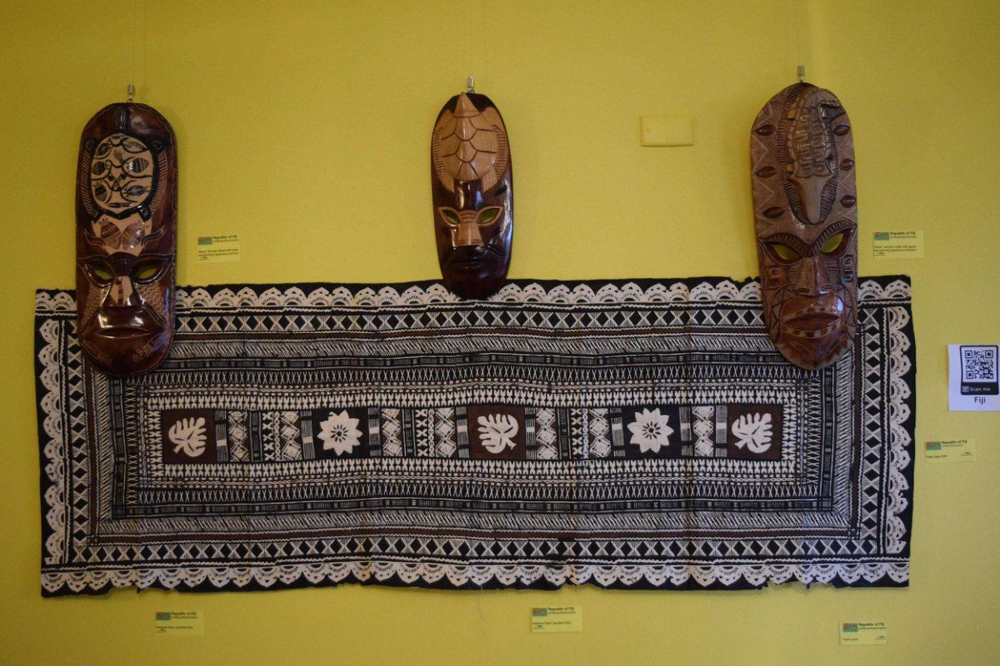
Masi (Barkcloth) & Wooden Masks
Fiji · Barkcloth, wood
Produced by women to wrap the sacred, masi’s stencilled geometry maps clan affiliation and cosmic order.Produsă de femei pentru a înveli sacrul, geometria șablonată a masi-ului cartografiază apartenența de clan și ordinea cosmică.
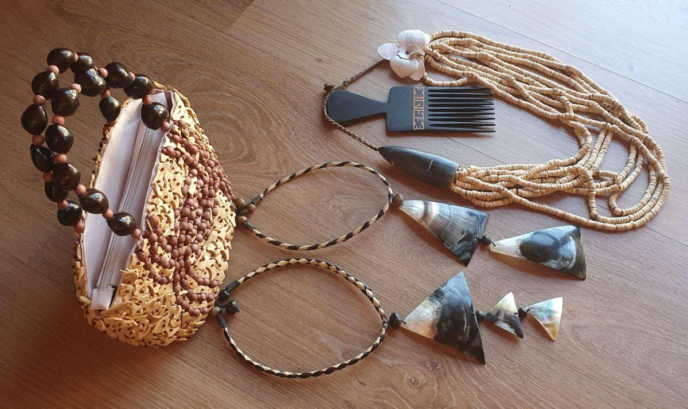
Shell Money Necklaces & Pearl Pendants
Fiji · Shell, mother-of-pearl, fibre
Woven adornment carrying wealth, rank, and the iridescence of the sea.Podoabă împletită purtând bogăție, rang și irizarea mării.